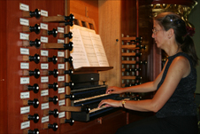
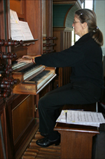
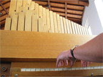
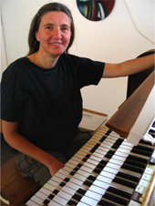

| |
Welkom op de site van Marieke Stoel
Organist, docent en componist
Marieke Stoel is sinds 1979 cantor-organiste in de Houtrustkerk in Den Haag. Ze bespeelt iedere zondag het orgel in de dienst en leidt de cantorij en het koor.
Daarnaast organiseert ze de koffieconcerten in de Houtrustkerk. Zelf geeft ze regelmatig orgelconcerten. Onlangs zijn drie cd's van haar uitgekomen.
Marieke geeft door de week piano- en orgelles.
Ten behoeve van de Houtrustkerk maakt Marieke vaak liedbewerkingen, maar ook wel geheel nieuwe composities.
Agenda
| Concerten in 2026 |
| MAANDAG! 20 april 2026 13.00 tot 13.30 uur | Academiegebouw Rapenburg Leiden Marieke Stoel orgel, inloopconcert. Twee herontdekte Ciacona's van JS Bach, een ciacona van Johann Bernhard Bach en een stuk vanJohann Christoph Bach |
| zaterdag 31 januari 2026 14.30 tot 15.00 uur | RK Marlotkerk Den Haag. Sprookjesconcert 'Hans en Grietje' door Maria voor 't Hekke vertelster en zang en door Marieke Stoel, piano. Met muziek van Engelbert Humperdinck en met geprojecteerde tekeningen. Toegang vrij. |
| Concerten in 2025 |
| MAANDAG! 28 april 2025 13.00 tot 13.30 uur | Academiegebouw Rapenburg Leiden Marieke Stoel orgel, inloopconcert. Met Renaissance dansen, delen uit de Floetenuhrstuecke van Joseph Haydn en de Voluntary in C van Pepusch. |
| zondag 8 juni 2025 12.00 tot 12.30 uur | Houtrustkerk Den Haag. Sprookjesconcert 'Hans en Grietje' door Maria voor 't Hekke vertelster en zang en door Marieke Stoel, piano. Met muziek van Engelbert Humperdinck en met op de grote witte kerkwand geprojecteerde tekeningen. Toegang vrij. |
| Concerten in 2024 |
| zondag 10 maart 2024 10.25 uur | Houtrustkerk Den Haag o.a. Tweekorige psalm 150 gecomponeerd door Marieke Stoel gezongen door het koor en de cantorij,met instrumentalisten. Telemann cantate 'Er hat alles wohl gemacht', door het koor met instrumentalisten. 'Evenwicht', tekst Arne Jonges, muziek Marieke Stoel, door de cantorij.Geheel o.l.v. Marieke Stoel. Voorganger ds. Wout Huizing. |
| zondag 10 maart 2024 12.00 tot 12.30 uur | Houtrustkerk Den Haag. Jubileum Koffieconcert door Marieke Stoel, orgel. Partita, 11 variaties, over 'Sei gegrüsset, Jesu gütig' van J.S. Bach. Toegang vrij. |
| vrijdag 19 april 2024 13.00 tot 13.30 uur | Grote Kerk Den Haag. Lunchconcert op het Metzlerorgel door Marieke Stoel, met 'Zes eeuwen Spaanse orgelmuziek' |
| woensdag 1 mei 2024 13.00 tot 13.30 uur | Academiegebouw Rapenburg Leiden Marieke Stoel orgel, inloopconcert |
| zaterdag 19 oktober 2024 15.00 tot 16.00 | Dorpskerk Nootdorp. Orgelrecital door Marieke Stoel, met werken van Spaanse componisten. |
| Concerten in 2023 |
| zondag 2 april 2023 10.25 uur | Houtrustkerk Den Haag Marcus Passie gecomponeerd door Marieke Stoel in Palmpasen dienst gezongen door de cantorij, orgelsoli door Marieke Stoel |
| zondag 9 april 2023 10.25 uur | Houtrustkerk Den Haag Het Houtrustkoor zingt de cantatate Erstanden van Dietrich Buxtehude,begeleid door instrumentalisten, cello, violen, orgel, o.l.v. Marieke Stoel |
| woensdag 3 mei 2023 13.00 tot 13.30 uur | Academiegebouw Rapenburg Leiden Marieke Stoel orgel, inloopconcert |
| zondag 21 mei 2023 12.00 tot 12.30 uur | Houtrustkerk Den Haag Marieke Stoel orgel met Bach-programma: Preludium en Fuga in G BWV 541 van J.S. Bach en de vijfde Sonate van C.Ph. E. Bach |
| zondag 11 juni 2023 12.00 tot 12.30 uur | Houtrustkerk Den Haag. Koffieconcert door Saxofoonkwartet TempoRarely met werk van Josquin des Prez: Mille Regretz,Philippe Rougeron: Deux Pieces, Claudio Dall' Albero: Preludio, Canzone e Danze en van Berend Stoel twee werken: Baroque Arrhythmique en Bodyscapes Tot slot als uitsmijter van Dave Brubeck: Blue Rondo a la Turk samen met Marieke Stoel, piano |
| zondag 11 juni 2023 15.00-16.30 | Leiden Sijthoff gebouw Douzastraat. Middagconcert door Saxofoonkwartet TempoRarely met werk van Josquin des Prez: Mille Regretz,Philippe Rougeron: Deux Pieces, Claudio Dall' Albero: Preludio, Canzone e Danze en van Berend Stoel twee werken: Baroque Arrhythmique en Bodyscapes. Van Dave Brubeck: Blue Rondo a la Turk samen met Marieke Stoel, piano. Daarna zingt Hardkoor o.l.v. Erik Van Bruggen. |
| zaterdag 9 september 2023 Open Monumenten Dag 15.30 uur | Woerden Lutherse Kerk.Cantorij o.l.v. dirigent en organist Jeroen de Haan, met Marieke Stoel orgel. 'Auferstanden'van Max Reger en werk voor twee orgels van Trombetti en Rovigo. |
| zaterdag 21 oktober 2023 15.00 tot 16.00 | Dorpskerk Nootdorp. Orgelrecital door Marieke Stoel, met werken van componisten uit De Nederlanden, o.a. Van Noordt, Pieter van Dalem, Sweelinck, Pool, Ruppe en Berger |
| vrijdag 27 oktober 2023 20.00 | Delft, Lutherse kerk. Concert met o.a. werk van Arvo Part door Serena Jansen, sopraan en Marieke Stoel, orgel |
| zaterdag 28 oktober 2023 15.00 | Houtrustkerk Den Haag. Concert met o.a. werk van Arvo Part door Serena Jansen, sopraan en Marieke Stoel, orgel |
| Concerten in 2022 |
| zondag 9 oktober 2022 12.00 uur | Houtrustkerk Den Haag Marieke Stoel orgel met een Bach programma: e moll Preludium en fuga, drie Schübler Choralen |
| woensdag 4 mei 2022 13.00 uur | Academiegebouw Leiden Marieke Stoel orgel, inloopconcert |
| Concerten in 2021 |
| zondag 5 december 12.00 uur | Houtrustkerk Den Haag Marieke Stoel orgel met een seizoensgerelateerd programma, onbekend werk van grote meesters |
| Concerten in 2019 |
| zondag 27 januari 2019 10.30 uur tot 12.30 | Houtrustkerk Den Haag Jubileum Marieke Stoel veertig jaar organist en dirigent, dienst om 10.30, concert om 12.00, m.m.v. koor en cantorij |
| Concerten in 2018 |
| zondag 4 maart 2018 13.00 uur tot 14.00 | Oudshoornse Kerk Alphen aan de Rijn Marieke Stoel speelt Walsen Fanfares en Marsen voor orgel.Op aanmelding bij de kerk lunch om 12.15 |
| vrijdag 9 maart 2018 20.00 uur tot 21.00 | Akademiegebouw Rapenburg Leiden Quod Libet kamerkoor en o.a. Marieke Stoel, orgel |
| zondag 29 april 2018 12.00-12.30 | Houtrustkerk Den Haag Marieke Stoel leidt het Vogelwijkkoor in een vogelrijk programma |
| woensdag 9 mei 2018 13.00 uur tot 13.30 | Akademiegebouw Rapenburg Leiden Marieke Stoel, orgel, samen met Dries van Loenen, blokfluit. Met werk van Muffat, Byrd, Loeillet, Frescobaldi |
| zondag 24 juni 2018 12.00 uur tot 12.30 | Houtrustkerk Den Haag Marieke Stoel met een vrolijk, zomers programma |
| vrijdag 20 juli 2018 12.45 tot 13.15 | Grote Kerk Den Haag Marieke Stoel orgel. Werk van Bach Bruhns en Van Noordt |
| zaterdag 28 juli 2018 12.45 tot 13.45 | Dorpskerk Voorschoten Marieke Stoel orgel. Paardenmarktconcert op het oude kabinetorgel en het grote Zeeman orgel. |
| vrijdag 2 november 2018 20.00-21.00 uur | Dorpskerk Zoeterwoude Dorp orgelconcert bij kaarslicht door Marieke Stoel. Er is koffie en thee tevoren en een drankje en ontmoeting na afloop. |
| zondag 11 november 2018 12.00 uur tot 12.30 | Houtrustkerk Den Haag Marieke Stoel orgel, met werken uit de Barok |
| maandag 24 december 2018 21.45 uur tot 23.00 | Houtrustkerk Den Haag Kerstavond met premiere 'Weihnacht' van Theo Flury door Marieke Stoel orgel, m.m.v. het Houtrustkoor |
| dinsdag 25 december 2018 10.25 uur tot 11.30 | Houtrustkerk Den Haag Eerste Kerstdag herhaling 'Weihnacht' van Theo Flury door Marieke Stoel orgel, m.m.v. de cantorij |
| Concerten in 2017 |
| zondag 26 maart 2017 12.00 uur tot 12.30 | Houtrustkerk Den Haag Marieke Stoel speelt orgelkoralen voor de Lijdenstijd van Bach. De bijbehorende melodieen uit de Johannes en de Matthaus Passion worden ter afwisseling gezongen door het publiek! |
| woensdag 3 mei 2017 13.00 uur tot 13.30 | Akademiegebouw Rapenburg Leiden door Marieke Stoel, orgel en Emma van Arragon sopraan. Oude en nieuwe liedjes van Verlangen, Verdriet en Vrijheid van o.a. Sweelinck, John Lennon, Paul Drayton. |
| Concerten in 2016 |
| zondag 17 april 2016 12.00 uur | Houtrustkerk Den Haag Marieke Stoel leidt het BomenbuurtKoor in eigen en andere composities over bomen |
| woensdag 4 mei 2016 13.00 uur | Akademiegebouw Rapenburg Leiden door Marieke Stoel, orgel en Berend Stoel sopraansaxofoon. Werken van Sweelinck, Van Noordt, Zipoli, Absil en Torelli |
| Concerten in 2015 |
| Goede Vrijdag 2015 19.30 uur | Houtrustkerk. O Haupt voll Blut und Wunden van Theo Flury voor twee orgels. Marieke Stoel en Carel Cames van Batenburg |
| zondag 26 april 2015 12.00 uur | Houtrustkerk Den Haag Marieke Stoel,orgel met een Bachprogramma, Preludium en Fuga in C BWV 547, Adagio BWV 527 en An Wasserflüssen Babylon BWV 653 |
| woensdag 6 mei 2015 13.00 uur | Akademiegebouw Leiden door Marieke Stoel. orgel en Diederik Cames van Batenburg, semi-akoestische gitaar. |
| dinsdag 14 juli 2015 12.45 tot 13.30 | Laurenskerk Rotterdam, zomermarktconcert, Marieke Stoel orgel met Spaanse composities |
| Selectie van concerten en evenementen in 2014 |
| zondag 15 juni 2014 12.00 uur | Houtrustkerk Den Haag. Orgelconcert door Marieke Stoel. Première voor Nederland van Introduction van P. Theo Flury, in combinatie met Fugue sur le thème du Carillon des heures de la Cathédrale de Soissons van Duruflé; 'Colloquio con le Rondini' van Enrico Bossi, 'Sortie' van Charles Tournemire en 'Ballade en Mode Phrygien' van Jehan Alain |
| zaterdag 28 juni 2014 15.00 uur | Scheveningen Oude Kerk. Marieke Stoel speelt op beide orgels o.a. Bach |
| zaterdag 29 november 2014 15.30 uur | orgelleerlingen Marieke Stoel spelen een eigen Variatie over Nu zijt wellekome en de aan hem of haar opgdragen variatie over Kom nu met zang |
| zondag 14 december 2014 14.30 uur | Kerstconcert in de Houtrustkerk met Marieke Stoel, orgel en het Haags Kleinkoor o.l.v. Hans Jansen |
| zondag 21 december 2014 19.00 uur | Avondmuziek in de Dorpskerk van Kethel, met Marieke Stoel, orgel en het Haags Kleinkoor o.l.v. Hans Jansen |
| Selectie van concerten en evenementen in 2013 |
| zondag 21 juli 2013 12.00 uur | Houtrustkerk Den Haag. Orgelconcert door Marieke Stoel. Passacaglia en fuga, Allein Gott in der Höh van J. S. Bach |
| zondag 6 oktober 2013 12.00 uur | Houtrustkerk Den Haag. Orgelconcert door Marieke Stoel.Werk van René Vierne, Dubois, Bossi e.a. |
| zondag 13 oktober 2013 19.00 | Basilica S. Prassede Rome. Orgelconcert door Marieke Stoel met Nederlandse, Franse, Italiaanse en Belgische composities. |
| zaterdag 14 december 2013 20.00 uur | Kerstconcert samen met Haags Kleinkoor in de Houtrustkerk |
| Selectie van concerten en evenementen in 2012 |
| zondag 25 maart 2012 12.00 uur | Houtrustkerk Den Haag. Orgelconcert door Marieke Stoel. Partita Sei gegrüsset Jesu gütig van J. S. Bach |
| zondag 20 mei 2012 12.00 | Houtrustkerk Den Haag. Haydn concert voor orgel en strijkerstrio. Marieke Stoel orgel, Rada Ovcharova viool, Emlyn Stam altviool, Willem Stam cello |
| zondag 22 juli 2012 12.00 | Houtrustkerk Den Haag. Marieke Stoel orgel |
| zaterdag 27 oktober 2012 14.00-17.00 | Houtrustkerk Den Haag. Marieke Stoel docent voor Studiedag van de KVOK met Onbekende orgelliteratuur voor de kersttijd. |
| vrijdag 14 december 2012 20.00 | Houtrustkerk Den Haag. Kerstconcert door het Haags Kleinkoor o.l.v. Hans Jansen. m.m.v. strijkers en Marieke Stoel, orgel en piano |
| maandag 17 december 2012 20.00-21.00 | Houtrustkerk Den Haag. Het Klais orgel is 75 jaar! Marieke Stoel |
| Selectie van concerten en evenementen in 2010 |
| zondag 11 april 2010 12.00 uur | Houtrustkerk Den Haag, met klarinettist Emirhan Tuga. Werken van Jan Raas, Ary Verhaar |
| zondag 30 mei 2010 12.00 uur | Houtrustkerk Den Haag. Marialied bewerkingen van Titelouze, de Grigny, Dupré en Langlais |
| zondag 4 juli 2010 12.00 uur | Houtrustkerk Den Haag. Werken van Handel, Lully, Saint-Saens en Badings |
| zaterdag 14 augustus 2010 | Kathedrale basiliek Sint Bavo Haarlem |
| vrijdag 17 december 2010 20.00 uur | Houtrustkerk Den Haag. Kerstconcert met koor cantorij en werk voor twee orgels |
| Selectie van concerten en evenementen in 2007 |
| 01-04-07 15:00 uur | Parijs. Uitreiking door de 'Société Académique Arts Sciences Lettres' van het Diplôme de Médaille de Bronze |
| 13-05-07 12:00 uur | Houtrustkerk, Den Haag met Nederlandse composities |
| 03-06-07 16:00 uur | R.K. Martelaren van Gorcum kerk Den Haag Duinoordfestival: vocale solisten en orgelsolo met o.a. Lubeck en Sweelinck |
| 16-06-07 15.15-16.45 uur | Grote kerk, Vlaardingen |
| 01-07-07 18:00 uur | Collégiale St. Waudru, Mons(Bergen), Belgie. met o.a. de Passacaglia van Peter Schat, Preludium e Fuga III van Henk Badings, Reeksveranderingen in vier secties I van Cor Kee |
| 04-07-07 12:45uur | Kloosterkerk, Den Haag |
| 20-07-07 20:00 uur | Grote Kerk, Beverwijk |
| 17-08-07 20.30 uur | Zell am See, Oostenrijk |
| 21-09-07 20:15 uur | Triumfatorkerk, Katwijk aan Zee |
| 06-10-07 15:00 uur | Grote Kerk, Schiedam |
| 14-12-07 20:00 uur tot 21.00 | Houtrustkerk, Den Haag Kerstconcert m.m.v. Tilly de Man, Maud Brugmans en Amber Breunis. Première van Cantilène en Méditation et Cortège van Paul Barras. |
|




|